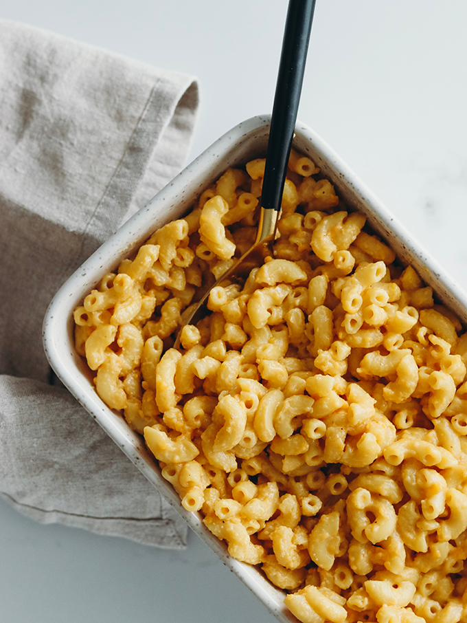

Vegan Cheese Sauce

Description: Homemade Cheese Sauce for Anything
This recipe will simplify your life. You can use it for pizza, burgers, nachos, macaroni, and much more.
It is a simple as boiling, blending, and seasoning. Let's get ready for some fun!!
Ingredients
- Potatoes
- Onions
- Garlic
- Salt
- Tumeric
- Salt
- Pepper
- Nutritional Yeast
- Lemon Juice
Steps
- Bring slightly salted water to a boil
- Add chopped potatoes, onions, and garlic to boil until potatoes are easily pierced by a fork
- Strain the vegetables and leave about 2/3 a cup of broth to help blend
- Add ingredients to a blender
- Add seasonings
- Add lemon juice and nutritional yeast to your liking